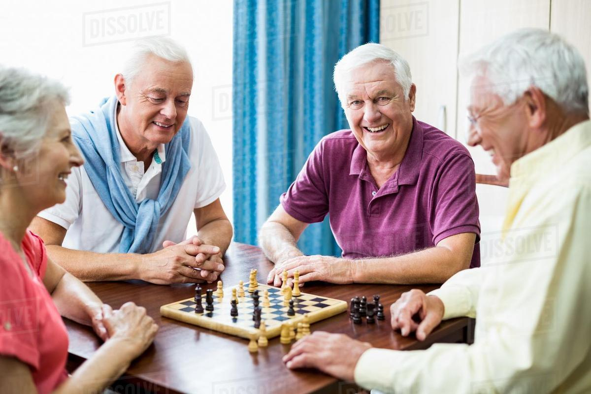

Article introduction
Chess has always been a symbol of power. After all, the ultimate goal is to attack the other’s king. In order to achieve this goal, you must outthink your opponent. This game challenges your mind and enhances your decision-making skills, with many other mentally healthy benefits. Chess can offer specific health benefits at different age groups.
Health benefits for children
-
Brain growth and development:
Children are constanly devloping pathways for new neurons, during this process they are the most susceptible to learning. Chess is a wonderful example of challenging your mind’s capabilities to think and make decisions. This can help in improving neural connection and make your everyday decisions faster and help your brain reach its optimal performance.
-
Enhances Creativity and Imagination:
Chess makes your use your right side of the brain (which is responsible for creativity) and unleashes your imagination and your ability to think outside the box. While playing chess, you understand that there are different ways you can view a problem and solve it, these creative skills can transfer over to decision making in your child’ life outside of chess.
-
Improves memory and raises IQ:
Chess can improve the memory of a child to a large extent, mainly because of all the xcomplex rules, tricks and patterns the child has to remember for the game. With that, studies have shown that chess can improve your IQ levels and make you a smarter person.
Health benefits for adults
-
Foresight:
While playing chess, you not only think of your move, but you also need to keep in mind what move your opponent might make. This promotes future planning and also develops critical thinking
-
Speed up recovery from strokes:
Playing chess can be a great form of rehabilitation as it improves the motor skills of disabled people. Moving the pieces in different directions can tune motor skills for elderly folks as well. Anxiety can be reduced since chess requires the player to stay focused in deep concentration
